Projects - App Prototype:
This project you were meant to design an app to be able to do the functionality
of your choosing, without fully implementing it. I created a traveling app.
This app is meant to aid in planning trips, this is not meant for booking flights or hotels.
The app will automatically give the most popular visiting spots currently but there
is also a search bar. I called it "Adventures Await".
This was my logo that I created
First you had to draw a few sketches to get the main ideas out.
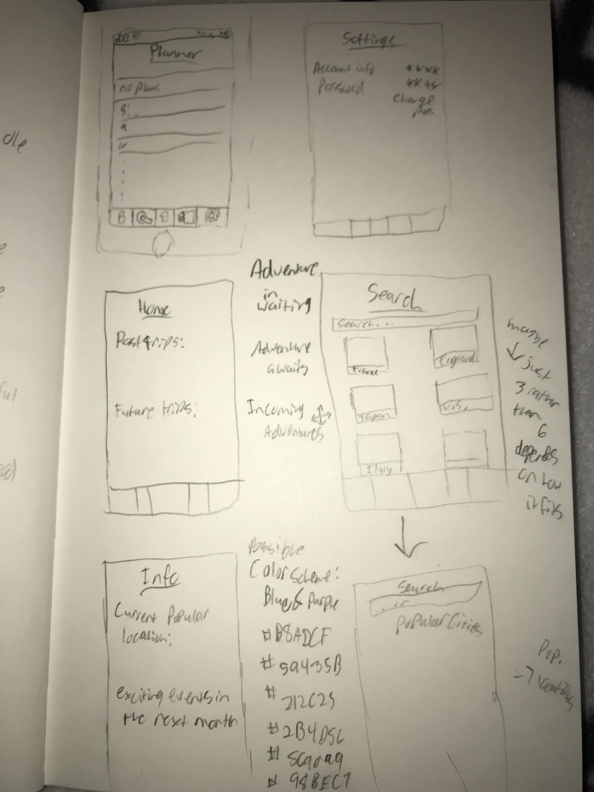Then you had to make wireframes of the main pages and a few extra pages.After you made the wireframes you put them in InVision to make it work as if it were a real app and ask three people to do a few tasks and give critiques. When testing mine it was suggested that I add a search bar. They also thought icons would look nicer for the dashboard.
Wireframe InVisionThird you added a meaningful color scheme and pictures to make it more detailed, as well as create enough pages for there to be a full sequence. Blue represents calm, tranquility and peace, and vacations and trips are meant to be peaceful and an escape from our stressful lives. Purple represents luxury and mystery, vacations are often luxurious and adventures are meant to be finding somewhere new or something that is a mystery to you.
 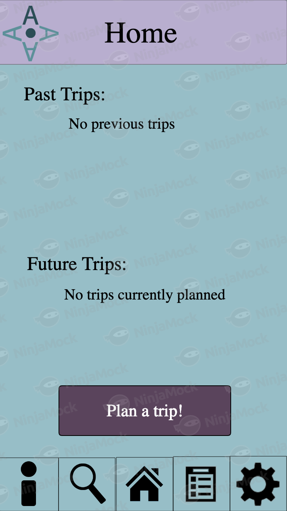
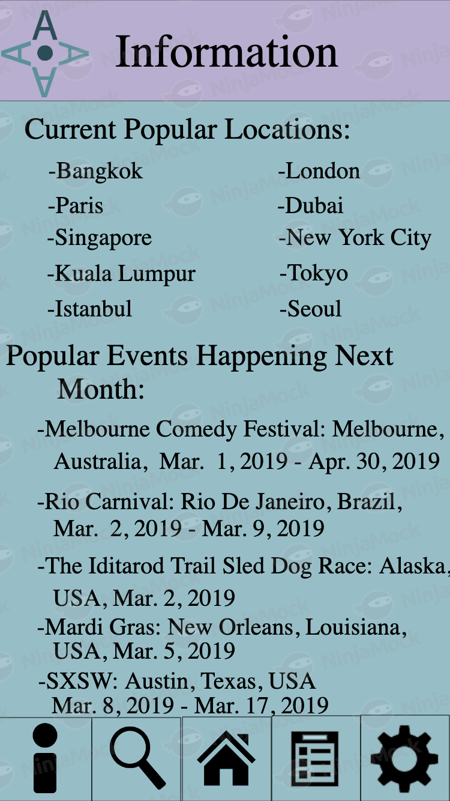
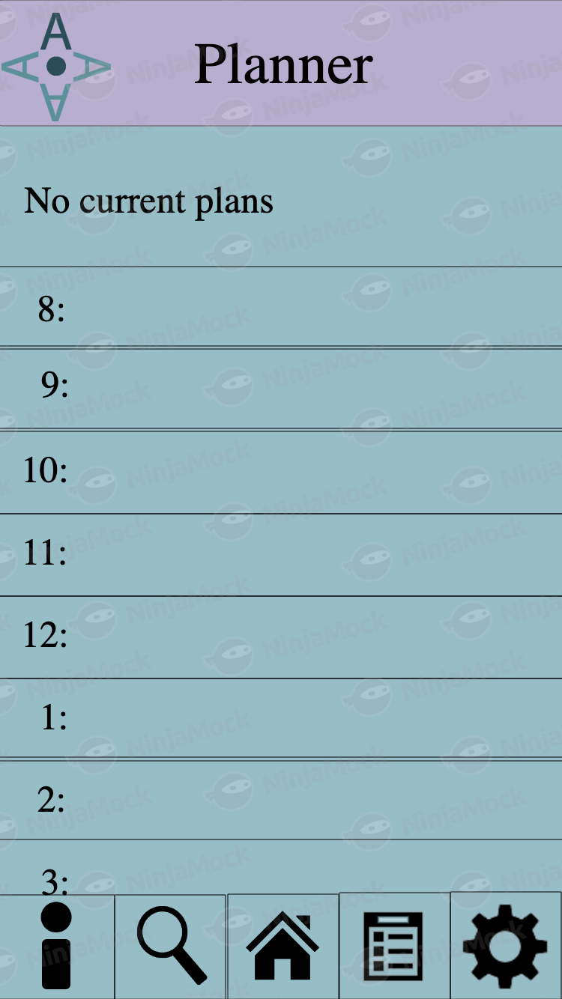
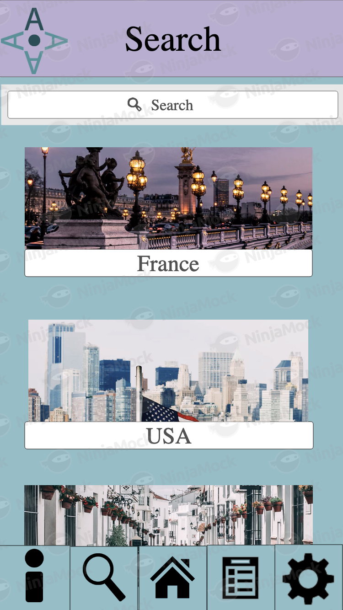
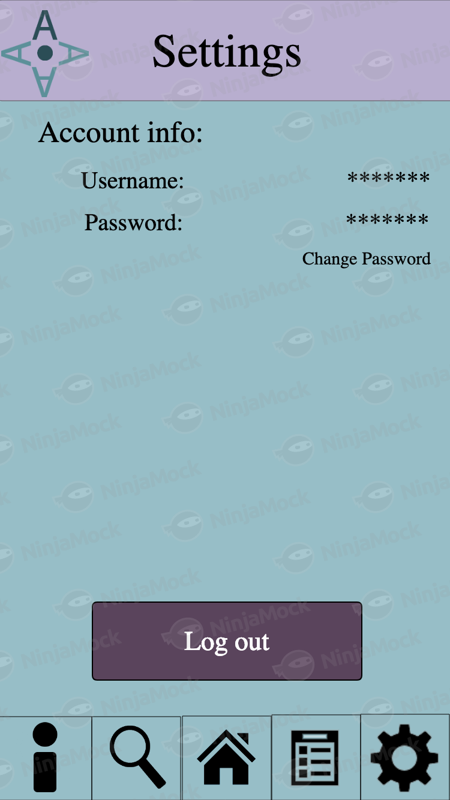
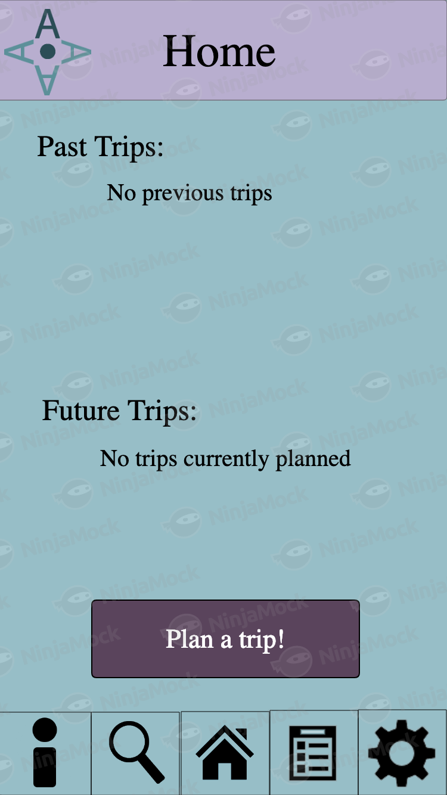
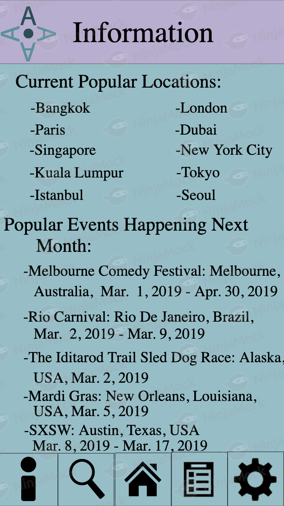
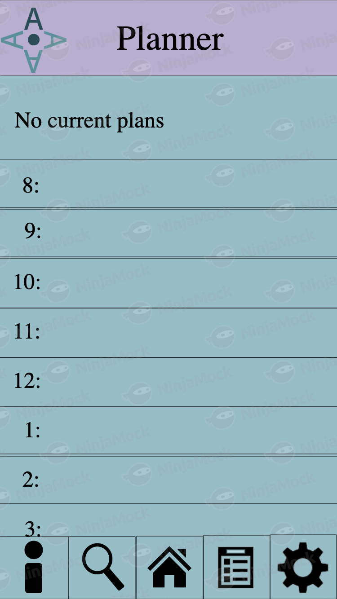
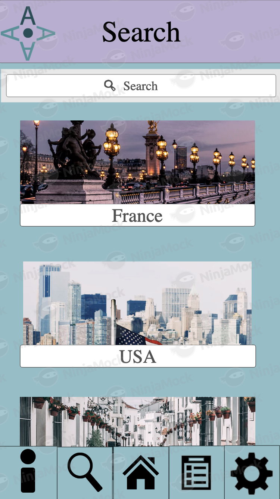
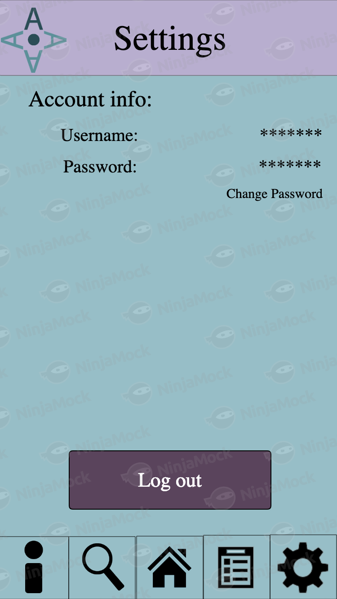
Then you once again put these into InVision.
Finished Project InVisionI made the logo, however all photos for places were from unsplash. The icons were found randomly on google, but were then edited by myself. All links for information and images used are cited in references. The pages for the app were made using ninjamock and the logo and icons were created or edited in photoshop.
References:
https://www.lonelyplanet.com/news/2018/09/25/most-visited-cities-travel/
https://www.trooptravel.com/top-global-events-in-2018-and-2019/
https://www.wildjunket.com/most-visited-countries/
https://www.thoughtco.com/major-cities-in-france-4165995
https://learningenglish.voanews.com/a/top-25-cities-in-america/2744774.html
https://www.talktotim.co.uk/blog/travel/2015/03/04/10-top-spanish-city-break-holidays/
https://unsplash.com/
https://kidskunst.info/18/08255-application-dashboard-icon.htm
http://chittagongit.com/icon/search-app-icon-22.html